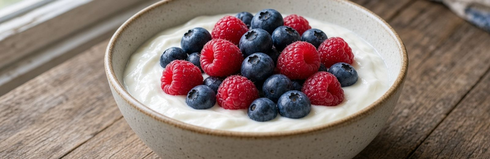

Breast Cancer Beyond Genetics · Part Three
What Actually Raises Your Risk
Ordered by how strong the evidence is, not by how much attention each one gets. Every item connects back to the conditions in Part Two.
Alcohol
Pooled analysis · 53 studiesThis is the clearest modifiable dietary risk factor for breast cancer, and the one you have heard least about.
A collaborative analysis pooling data from 53 studies found breast cancer risk rose about 7.1% for every additional 10 grams of alcohol per day — slightly less than one standard drink.
There is no threshold below which the effect disappears. It begins at the first drink.
Why. Alcohol raises circulating estrogen. It converts to acetaldehyde, a recognized carcinogen. It generates oxidative stress. And it interferes with folate metabolism — which means it directly impairs the methylation your body uses to neutralize the dangerous estrogen byproducts from Part Two.
That last mechanism is the one nobody mentions. Alcohol does not simply add estrogen. It disables the system that cleans up estrogen’s most damaging metabolites.
The nightly glass of wine framed as heart-healthy is, for breast tissue, the single most modifiable exposure on this list. Moving from daily to occasional changes your numbers meaningfully.
Body Fat After Menopause
Meta-analysisBefore menopause, your ovaries make most of your estrogen. After menopause they largely stop — and fat tissue becomes a primary site of estrogen production, converting other hormones into estrogen through an enzyme called aromatase. More fat means more estrogen, plus more inflammation and higher insulin.
A 2026 meta-analysis found that among postmenopausal women, being overweight was associated with about 31% higher risk, and obesity with about 43% higher risk.
The relationship is genuinely different before menopause, which is why blanket statements about weight and breast cancer are misleading.
Watch waist circumference and muscle mass rather than the scale. A woman can sit at a “normal” weight while carrying substantial visceral fat and very little muscle — invisible on a bathroom scale, and it matters more than the number on it.
Inactivity And Muscle Loss
Meta-analysis · nearly 4 million controlsA meta-analysis including nearly four million controls found active women had roughly 22% lower risk than inactive women, with a clear pattern: more activity, lower risk.
Why. Movement lowers insulin, reduces body fat, regulates hormones, supports immune surveillance, lowers inflammation, and stimulates the growth of new mitochondria. It touches nearly every item in the Part Two box.
Muscle deserves separate mention. It is where you dispose of glucose — less muscle means more circulating insulin doing the same job, which means more electron overflow and more mitochondrial damage. Muscle mass also predicts how well women tolerate chemotherapy if they ever need it.
Resistance training at least twice a week, plus regular walking. Walking ten to twenty minutes after meals blunts the glucose rise more effectively than the same walk at another time of day.
Hormone Exposure Over A Lifetime
Pooled analysis · 9 prospective studiesRoughly three-quarters of breast cancers carry estrogen receptors, progesterone receptors, or both — meaning the cells have docking sites that hormones can act on.
Pooled analysis of nine prospective studies found postmenopausal women in the highest category of total estradiol had about twice the risk of those in the lowest. For free estradiol — the fraction not bound to carrier proteins, and therefore the fraction that can actually reach a cell — it was about 2.6 times.
Total lifetime estrogen exposure rises with early first period, late menopause, postmenopausal body fat, certain hormone therapies, alcohol, fewer pregnancies, later first pregnancy, and less breastfeeding.
Go deeper: on estrogen dominance
The term describes something real — estrogenic activity high relative to progesterone. Conventional research usually calls it unopposed estrogen or luteal insufficiency. It shows up during anovulatory cycles and perimenopause, when ovulation becomes inconsistent, progesterone falls, and estrogen stays comparatively strong.
Two honest caveats. Progesterone is not automatically protective in every context, and natural progesterone and synthetic progestins do not behave identically. Combined estrogen-progestin menopausal therapy has been associated with increased breast cancer risk.
The issue is not that estrogen is bad. Estrogen is essential. The concern is prolonged, excessive, or poorly balanced stimulation of susceptible tissue — and, as Part Two described, estrogen routed down the damaging exit.
Stress And Cortisol
Study · 104 womenThis is the risk factor women are most often told is “just stress” — and it has harder data behind it than most people expect.
Cortisol is supposed to follow a rhythm: high in the morning, falling through the day, low at night. Chronic stress flattens that curve. Researchers call a flattened rhythm one of the clearest physical signatures of accumulated stress load.
In a study of 104 women with metastatic breast cancer, salivary cortisol was measured four times a day for three consecutive days. Women whose cortisol rhythm was flattened or abnormal died earlier — and the effect held after adjusting for every other prognostic factor measured.
What connects it to Part Two is the second finding. Flattened cortisol profiles were linked with low counts and suppressed activity of natural killer cells — the immune cells whose entire job is finding and destroying abnormal cells. NK cell count emerged as its own independent predictor of survival.
The same pattern has since been found in ovarian, lung, colorectal, and kidney cancer. In kidney cancer, a flatter cortisol slope carried roughly twice the likelihood of death.
There is a second pathway. Glucocorticoids have been shown to inhibit apoptosis in breast cancer cell lines and in animal models of breast cancer — the same self-destruct program Part Two described. And stress-driven adrenaline signaling promotes the spread of tumor cells.
This is not “relax more.” It is protecting the rhythm: morning light, consistent sleep and wake times, real recovery between demands, and treating chronic unresolved stress as a physical problem rather than a personality trait. Everything in this book that supports circadian rhythm also supports cortisol.
The Gut Connection Most Women Never Hear
Your liver deactivates estrogen by attaching a molecule to it, which tags it for disposal, and sends it to the gut to leave the body. Certain gut bacteria produce an enzyme called beta-glucuronidase that snips that tag off. The estrogen becomes active again, re-enters circulation, and reaches breast tissue for a second time.
An overgrowth of those bacteria means estrogen you already processed keeps coming back.
This is why constipation, low fiber, and a disrupted microbiome are hormone problems, not just digestive ones. The same gut bacteria return later in this book — they also decide whether several protective foods work for you at all.
Blood Sugar And How You Eat
Diets built on refined flour, sugary drinks, sweets, and ultra-processed food are associated with worse metabolic health and, in a number of studies, higher breast cancer risk.
Part Two explained the mechanism: repeated blood sugar spikes overload the electron chain in your mitochondria, producing the reactive byproducts that damage mitochondrial DNA and weaken apoptosis. At the same time, chronically elevated insulin raises IGF-1 and frees more estrogen from its carrier protein.
Fiber works the opposite direction. Higher intake is generally associated with lower risk — it supports elimination, reduces estrogen reabsorption, improves insulin sensitivity, and feeds a more diverse microbiome.
Processed meat shows a modest association with increased risk in several observational studies. This is different from fresh meat. Nitrites, preservatives, high-temperature cooking compounds, and the broader processed-food pattern are all candidate explanations.
Start with the obvious sources — sugary drinks, refined flour, sweets. This is the most direct lever you have on insulin, and insulin is the thread running through nearly every risk in this chapter.
Milk And Dairy
This deserves its own section, because the headlines contradict each other and the reason they do is genuinely useful.
Studies asking about dairy as one category mostly find nothing, or find a small benefit. A 2025 meta-analysis of 51 studies covering 62,602 breast cancer cases found overall dairy consumption associated with slightly lower risk (RR 0.91).
But when researchers separate fluid milk you drink from fermented dairy, the picture changes.
The fluid milk signal
The Adventist Health Study-2 followed more than 52,000 women and found risk rising with fluid cow’s milk intake — climbing steeply at modest amounts and then leveling off. Soy milk showed no such association. Separately, a meta-analysis of cancer mortality found whole and high-fat milk associated with higher total cancer mortality.
Why milk specifically
Why fermented dairy behaves differently
Women eating three or more daily servings of yogurt, hard cheese, and cottage cheese showed no higher risk than women eating none. In a pooled analysis of 21 cohorts, yogurt and cottage cheese showed modest inverse associations with ER-negative breast cancer. A 2015 meta-analysis of 22 cohorts covering 1.5 million people found yogurt intake associated with 9% lower risk and low-fat dairy with 15% lower.
The explanation is direct and testable: yogurt consumption does not raise circulating IGF-1 the way other dairy products do. Fermentation also introduces live bacteria, which matters for the estrogen-clearing gut described above.
Reduce or drop fluid cow’s milk, particularly whole and full-fat, and particularly if you drink it daily. Keep fermented dairy — plain yogurt, kefir, aged cheese, cottage cheese. You are not eliminating a food group. You are shifting which form of it you use.

Circadian Disruption
Meta-analysis · 4 million+ participantsYour body schedules hormone release, DNA repair, immune activity, and metabolism against the light-dark cycle. Night-shift work disrupts that timing and suppresses nighttime melatonin.
A meta-analysis of more than four million participants found roughly 20% higher risk among night-shift workers, with stronger associations for hormone-receptor-positive cancers. Another put it near 11%.
Melatonin is not only a sleep hormone. It is an antioxidant with a role in DNA repair, it lowers IGF-1, and in laboratory work it reduces the activity of aromatase — the same enzyme that converts other hormones into estrogen in fat tissue. Light at night suppresses it.
Outdoor light soon after waking. Dark bedroom. Dimmer, warmer light in the evening. Consistent sleep and wake times. And where you have a choice, fewer years of rotating or overnight shifts.
What This List Is Really Telling You
Alcohol raises estrogen and blocks the methylation that neutralizes its worst metabolites. Body fat raises estrogen and insulin. Inactivity raises insulin and costs you muscle. Refined carbohydrate raises insulin, and insulin frees more estrogen from its carrier protein. Fluid milk raises IGF-1. Poor gut function recycles estrogen back into circulation. Chronic stress suppresses the immune cells that remove damaged cells. Disrupted sleep worsens all of it.
Which is what makes the rest of this book possible. If the risks converge, so do the remedies.
One category is missing from this chapter, and it is large enough to need its own: what you absorb from the world around you. That is next.